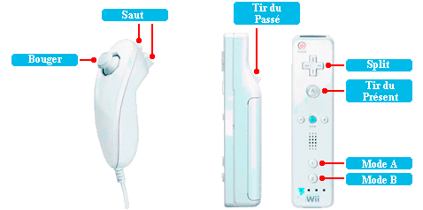
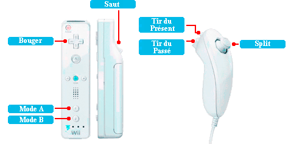
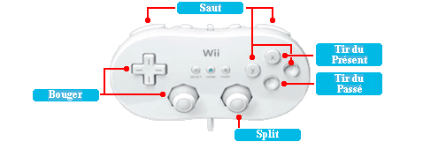
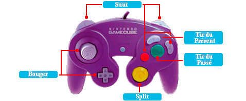

9 |
Contrôles |
 |
Dans ce mode, nous utiliserons le Nunchuk pour sauter et contrôler notre héros. La Télécommande Wii s'utilisera pour tirer et utiliser le mode SPLIT(Diviser). En plus, avec le bouton 1 et 2, nous pourrons basculer entre le mode de Contrôle A et B respectivement.

Avec ce mode, la Télécommande Wii s'utilisera pour sauter et bouger notre héros, mais aussi pour changer de Mode de Contrôle. Avec le Nunchuk nous pourrons tirer et utiliser le pouvoir SPLIT(Diviser).

Connecte la Manette Classique a la Télécommande Wii pour pouvoir jouer dans ce mode de jeu.

Connecte la manette Nintendo GameCube dans le port manette 1. Pour activer, appuie sur le bouton A.
 |
|
 |
 |
 |